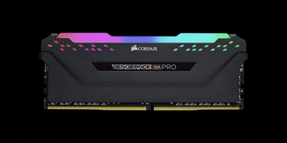

rápido y temporal que se utiliza en computadoras y otros dispositivos electrónicos. Funciona como un área de almacenamiento donde se guardan temporalmente datos y programas que están siendo utilizados activamente por el sistema operativo y las aplicaciones en ejecución. La memoria RAM es de acceso aleatorio, lo que significa que se puede acceder a cualquier ubicación de memoria en cualquier momento, sin necesidad de acceder secuencialmente desde el principio. Esto permite un acceso rápido y eficiente a los datos almacenados en ella, lo que mejora el rendimiento general del sistema al reducir los tiempos de carga y respuesta.
Una de las características principales de la memoria RAM es su volatilidad. Los datos almacenados en la memoria RAM se pierden cuando se apaga la alimentación del dispositivo o se reinicia, lo que la diferencia del almacenamiento a largo plazo, como los discos duros o las unidades de estado sólido (SSD), que retienen los datos incluso cuando el dispositivo está apagado. Esta volatilidad hace que la memoria RAM sea adecuada para almacenar datos y programas temporales utilizados durante la sesión de trabajo actual, pero no es adecuada para el almacenamiento a largo plazo de datos importantes.

La memoria RAM también tiene una capacidad limitada en comparación con el almacenamiento a largo plazo, como los discos duros o las SSD. La cantidad de memoria RAM en un dispositivo afecta directamente su capacidad para ejecutar múltiples programas y tareas simultáneamente. Los dispositivos con una mayor cantidad de memoria RAM pueden manejar una mayor carga de trabajo y ejecutar programas más grandes y complejos sin experimentar una degradación del rendimiento.
Otra característica importante de la memoria RAM es su velocidad. La memoria RAM es mucho más rápida que el almacenamiento a largo plazo, lo que permite un acceso rápido a los datos y programas almacenados en ella. Esto mejora significativamente el rendimiento general del sistema al reducir los tiempos de carga y respuesta de las aplicaciones y mejorar la capacidad de multitarea del dispositivo.
como fuinciona la memoria ram
La memoria RAM (Random Access Memory) funciona como una forma de almacenamiento temporal para datos y programas que están siendo utilizados activamente por el sistema operativo y las aplicaciones en ejecución en un dispositivo electrónico, como una computadora. una version simplificada de como funciona es la siguiente:
Almacenamiento temporal: La memoria RAM actúa como un área de almacenamiento temporal para datos y programas que están siendo utilizados activamente por el sistema operativo y las aplicaciones en ejecución. Cuando abres un programa o archivo en tu dispositivo, parte de ese programa o archivo se carga en la memoria RAM para que el procesador pueda acceder rápidamente a él mientras lo estás utilizando.
Acceso rápido: La memoria RAM es mucho más rápida que el almacenamiento a largo plazo, como los discos duros o las unidades de estado sólido (SSD). Esto permite un acceso rápido a los datos y programas almacenados en la memoria RAM, lo que mejora el rendimiento general del sistema al reducir los tiempos de carga y respuesta.
Acceso aleatorio: La memoria RAM es de acceso aleatorio, lo que significa que se puede acceder a cualquier ubicación de memoria en cualquier momento, sin necesidad de acceder secuencialmente desde el principio. Esto permite un acceso rápido y eficiente a los datos almacenados en ella, lo que mejora el rendimiento general del sistema.
Volatilidad: La memoria RAM es volátil, lo que significa que los datos almacenados en ella se pierden cuando se apaga la alimentación del dispositivo o se reinicia. Por esta razón, se utiliza principalmente para almacenar datos y programas temporales que están siendo utilizados activamente por el sistema operativo y las aplicaciones en ejecución.
evolucion de la memoria ram
Primera Generación (1940-1956)
Durante esta época inicial de las computadoras, no existía la memoria RAM tal como la conocemos hoy en día. En su lugar, se utilizaban dispositivos de almacenamiento temporal, como relés y tubos de vacío, para almacenar datos y programas en la memoria de acceso aleatorio. Estos dispositivos eran lentos y poco confiables, lo que limitaba significativamente la capacidad de procesamiento de las primeras computadoras.
Segunda Generación (1956-1963)
Con la introducción de los transistores, se comenzaron a desarrollar sistemas de memoria de acceso aleatorio más avanzados. Durante esta época, se implementaron memorias de núcleos magnéticos, que utilizaban pequeños anillos magnéticos para almacenar datos de forma temporal. Estas memorias eran más rápidas y confiables que los dispositivos de almacenamiento anteriores, lo que permitió una mejora significativa en el rendimiento de las computadoras de segunda generación.
Tercera Generación (1964-1971)
En esta época, se introdujeron las primeras memorias de semiconductores, que utilizaban transistores para almacenar datos de forma temporal. Estas memorias, conocidas como memorias de acceso aleatorio de semiconductor (SRAM), ofrecían tiempos de acceso más rápidos y una mayor confiabilidad en comparación con las memorias de núcleos magnéticos. Sin embargo, eran costosas de producir y se utilizaban principalmente en aplicaciones especializadas.
Cuarta Generación (1971-1980)
Durante la cuarta generación de computadoras, se produjo la introducción de las primeras memorias de acceso aleatorio dinámico (DRAM). Estas memorias utilizaban capacitores para almacenar datos de forma temporal y ofrecían una mayor densidad de almacenamiento y un menor costo por bit en comparación con las memorias SRAM. La DRAM se convirtió en la forma dominante de memoria RAM durante esta época y sigue siendo ampliamente utilizada en la actualidad.
Quinta Generación (1980-presente)
La evolución de la memoria RAM ha continuado en la quinta generación de computadoras con la introducción de tecnologías más avanzadas, como la memoria de acceso aleatorio estática (SRAM) para aplicaciones especializadas que requieren tiempos de acceso ultrarrápidos y la memoria de acceso aleatorio no volátil (NVRAM) que retiene los datos incluso cuando se apaga la alimentación del dispositivo. Además, se han desarrollado tecnologías de memoria más recientes, como la memoria DDR (Double Data Rate) y la memoria flash NAND, que ofrecen una mayor velocidad y densidad de almacenamiento para satisfacer las demandas de las aplicaciones informáticas modernas.